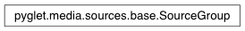

SourceGroup Class¶
-
class
SourceGroup(audio_format, video_format)¶ Read data from a queue of sources, with support for looping. All sources must share the same audio format.
Variables: audio_format – Required audio format for queued sources. Attributes:
loopLoop the current source indefinitely or until next is called.